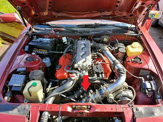

-
Howdy folks, problem is while the car is still building boost, while I watch my boost gauge, there is a stumble / blip right as the vacuum goes to 0 and starts turning into boost. It does this pretty consistently, feels like only one small misfire. The more throttle I'm giving it the harder the blip / stumble feels as it crosses over into boost. I never feel this blip so long as I never enter touch boost.
Aside from this, the car seems to start cold/warm, pull, and idle perfectly fine, no issues with stalling after pulls. This behavior has existed since before my engine rebuild and has persisted through new and gapped spark plugs.
I've checked and retightened things a few times now for boost or vacuum leaks but I will try to smoke the system if it's still the consensus. Fuel pressure tested good at 37psi.
Setup: I've got an '86 na2t 5spd 2+2 GLL with an eBay t3 turbo, front-mount relocated, with an '86T ECU and injectors, not running an o2. All EGR/Idle controls etc are gone. Using stock MAF, placement (picture) is 2ft after any bend. I don't think my MAF has any screen or anything on it…can anyone speak with experience about this being necessary?
I'm wondering if this is something I will have to fix in a tune being that I'm running a not-stock turbo
Thanks for any input!Last edited by drnict61; 05-27-2020, 10:20 AM. -
What are you using for tuning? Do you experience the same on a drawthru setup?545 RWHP & 540 RWTQOriginally posted by Andrew84zx
tell her your car is so fast it will make her panties fly off

-
Right now I've got the stock '86t ecu and tune, I have a spare '86na ecu that I installed nistune on that I'll eventually use. Still wrapping my head around nistune but I'm either willing to spend a few weeks figuring it out or take it to a shop but I'd be waiting for a while on the shop route.Originally posted by FlawleZ View Post
It's been a long time since I've last ran draw-through which gave me issues like almost stalling after pulls or revs and just a rougher feeling ride, but I can't recall if it still had this specific behavior.
This thread is what originally convinced me to try blow through which solved most of the woes: https://z31performance.com/forum/z31…with-stock-maf -
I run draw thru because of the heat soak and metering issues blow thru has. I don't have any stalling issues but I'm also tuned on NIStune. Honestly, I'm not on the least surprised you're having this issue. The car really needs a tune after intercooling. It adds noticeable load and lag vs no intercooler. Do you have a wideband installed? I bet you're running pig rich during that time.545 RWHP & 540 RWTQOriginally posted by Andrew84zx
tell her your car is so fast it will make her panties fly off
-
You betcha, the wideband agrees.Originally posted by FlawleZ View Post
I'll try some things with a draw trhough setup but I'm expecitng that I'll need to tune to fix it, and like you mentioned it needs it anyways

Copyright © 2006–. All rights reserved. Privacy Policy